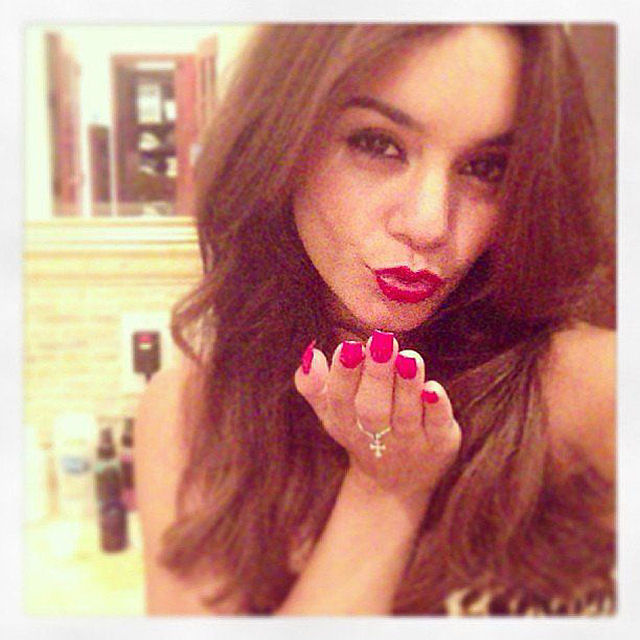
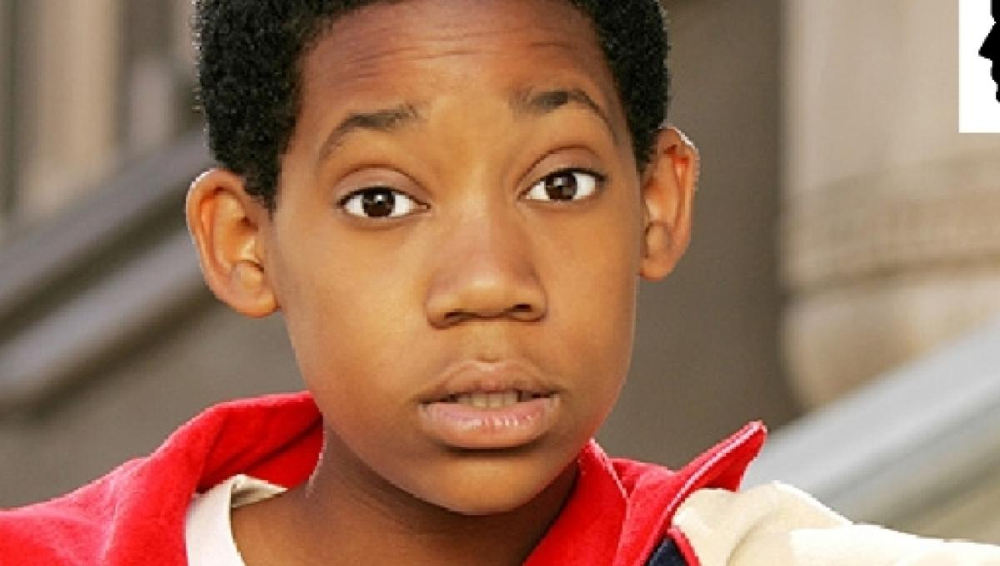

Popular?

Popularidade não é uma característica de algo ou alguém comum, normal, tão pouco impopular. A popularidade muitas vezes concentra a atenção, o noticiário, a mídia, os holofotes, em cima de uma pessoa, fato ou objeto. Ser popular também é típico dos aventureiros, brigões, ou daquelas gatinhas patricinhas.
'Equilibrada', nem tão popular nem tão Nerd?

Uma pessoa mais equilibrada no seu estilo de vida expressa ponderação, sensatez; tem espírito equilibrado; decisão equilibrada; foge daquilo que é extremo.
Nerd?
Nerd é um conceito sociológico moderno que por vezes é descrito como uma tribo urbana, muito embora possua características gerais mais imprecisas do que a maioria delas, e embora também não preceda à autoidentificação.O Cinema tem visto vários personagens nerds memoráveis, incluindo, mas não se limitando a: Brian Johnson (Anthony Michael Hall) em The Breakfast Club, Fogell de Superbad, Peter Parker, da franquia Spider-Man, Hermione Granger, da franquia Harry Potter, etc.
CURTIU? Nós somos a Agência "Buddy Love - O cupido do Amor", estamos a 8 anos no mercado possibilitando encontros de pessoas da mesma cidade que tenham
o mesmo perfil, os mesmos sonhos, enfim. Então, o que está esperando?
Faça sua inscrição gratuitamente.
Formando grupo, um agente de nossa equipe entrará em contato para confirmar seu interesse.
Imagine, por R$200,00 passar o dia inteiro conhecendo pessoas interessantes, incluindo passeios incríveis, almoço, café da tarde e jantar? E se sua cara-metade estiver lá?
Não perca mais tempo, faça sua inscrição no link abaixo e aguarde nosso contato!
Duvidas? Contato: amadoX@ig.com.br.
WHATTSZAP: 035-1234-56-78.